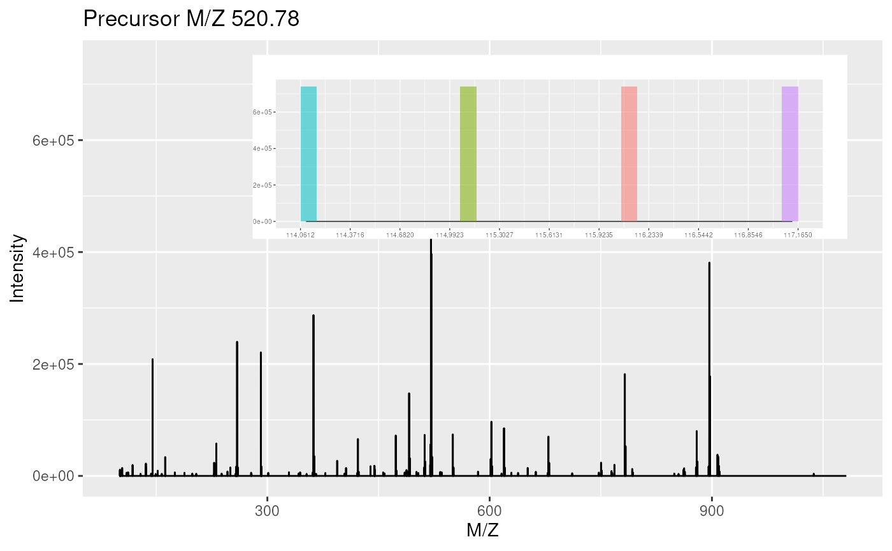

removeReporters-methods.RdThis methods sets all the reporter tag ion peaks from one MS2
spectrum or all the MS2 spectra of an experiment to 0. Reporter data
is specified using an "ReporterIons"
instance. The peaks are selected around the expected reporter ion
m/z value +/- the reporter width.
Optionally, the spectrum/spectra can be cleaned to
remove successive 0 intensity data points (see the clean
function for details).
Note that this method only works for MS2 spectra or experiments that contain MS2 spectra. It will fail for MS1 spectrum.
signature(object = "MSnExp", reporters = "ReporterIons",
clean = "logical", verbose = "logical" )The reporter ion
peaks defined in the reporters instance of all the MS2
spectra of the "MSnExp" instance are set to 0
and, if clean is set to TRUE, cleaned. The default
value of reporters is NULL, which leaves the spectra
as unchanged. The verbose parameter (default is
TRUE) defines whether a progress bar should be showed.
signature(object = "Spectrum", reporters = "ReporterIons",
clean = "FALSE")The reporter ion peaks defined in the
reporters instance of MS2 "Spectrum"
instance are set to 0 and, if clean is set to TRUE,
cleaned. The default value of reporters is NULL,
which leaves the spectrum as unchanged.
Laurent Gatto <lg390@cam.ac.uk>
clean and removePeaks for other spectra
processing methods.
sp1 <- itraqdata[[1]] sp2 <- removeReporters(sp1,reporters=iTRAQ4) sel <- mz(sp1) > 114 & mz(sp1) < 114.2 mz(sp1)[sel]#> [1] 114.0956 114.0975 114.0993 114.1012 114.1030 114.1049 114.1067 114.1085 #> [9] 114.1104 114.1122 114.1141 114.1159 114.1178 114.1196 114.1214 114.1233 #> [17] 114.1251#> [1] 0.0000 0.0000 0.0000 0.0000 1640.2427 25143.0898 #> [7] 87905.3906 164363.5156 197455.8125 158061.2812 79058.3672 17596.0898 #> [13] 346.5309 0.0000 0.0000 0.0000 0.0000#> [1] 0 0 0 0 0 0 0 0 0 0 0 0 0 0 0 0 0